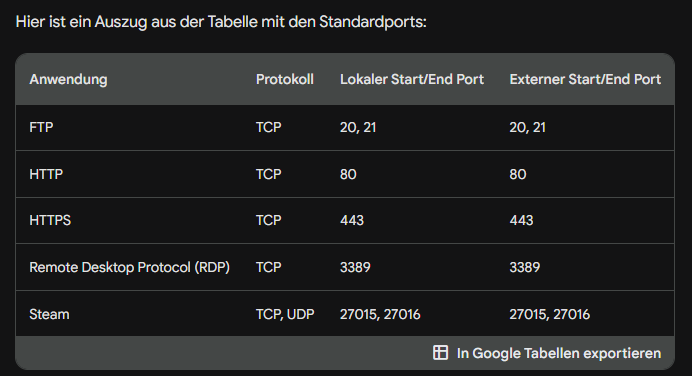
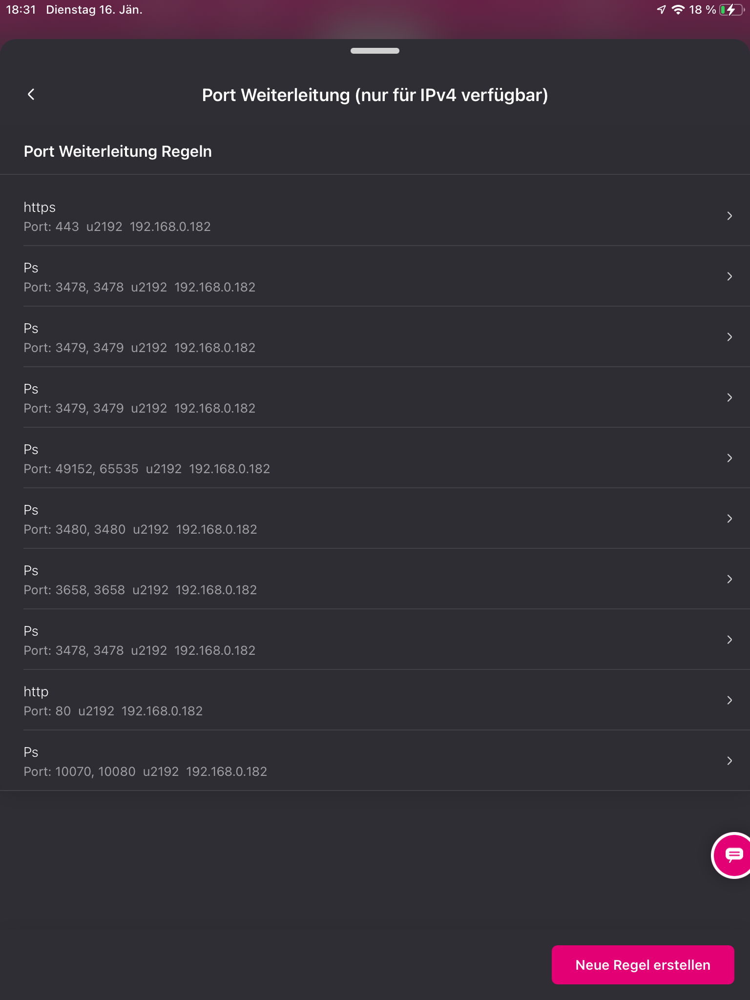

Hallo, bin gerade am rätseln wie ich bei der Fiber Box die Ports frei gebe. Einstellungen kann ich machen bzw. habe ich mir umstellen lassen, Menü habe ich also aber was muss ich wie hinterlegen. Laut Sony_PS5 " TCP Ports: 80, 443, 5223, und 10070 bis 10080 & UDP Ports: 3478, 3479, 3658 und 10070 "
Lokale IP ? ( PS5 hat aktuell keine feste IP eingestellt!!! )
Lokaler Start Port ?
Lokaler End Port ?
Externer Start Port ?
Externer End Port ?
Ich habe zwar schon auf routern ports freigeschalten, da ich aber kein Profi bin und es hier anders aussieht habe ich erst mal keinen Plan wie ich was eingeben muss.. Kann mir da jemand Tips geben bitte bzw. eine Hilfe? DANKE!
Am 4.1.2024 um 13:23 schrieb Mario75:Kann mir da jemand Tips geben
Hey,
Um Ports auf der Internet Fiber Box zu konfigurieren, müssen Sie sich zunächst in das Web-Bedienmenü der Box einloggen. Geben Sie dazu die IP-Adresse der Box in Ihren Browser ein. Die Standard-IP-Adresse ist 192.168.1.1.
Sobald Sie sich im Web-Bedienmenü angemeldet haben, klicken Sie auf den Menüpunkt Netzwerk und dann auf Port-Weiterleitung.
Auf der Seite Port-Weiterleitung geben Sie folgende Informationen ein:
- Protokoll: Wählen Sie das Protokoll aus, das Sie weiterleiten möchten. Die verfügbaren Protokolle sind TCP, UDP und beides.
- Startport: Geben Sie den Anfang des Portbereichs ein, den Sie weiterleiten möchten.
- Endport: Geben Sie das Ende des Portbereichs ein, den Sie weiterleiten möchten.
- Lokales Gerät: Geben Sie die IP-Adresse des Geräts im Netzwerk ein, zu dem die Verbindungen hergestellt werden sollen.
Wenn Sie eine DMZ einrichten möchten, aktivieren Sie das Kontrollkästchen DMZ und geben Sie die IP-Adresse des Host-Geräts ein.
Klicken Sie auf Änderungen übernehmen, um Ihre Änderungen zu speichern.
Beispiel:
Wenn Sie einen FTP-Server auf Ihrem Computer mit der IP-Adresse 192.168.1.100 betreiben möchten, müssen Sie folgende Informationen eingeben:
- Protokoll: TCP
- Startport: 21
- Endport: 21
- Lokales Gerät: 192.168.1.100
Hinweise:
Stellen Sie sicher, dass das Gerät, zu dem Sie die Verbindungen weiterleiten möchten, den gewünschten Port geöffnet hat.
Wenn Sie eine DMZ einrichten, ist das Host-Gerät für alle eingehenden Verbindungen offen. Dies kann ein Sicherheitsrisiko darstellen.
Weitere Informationen zur Port-Weiterleitung auf der Internet Fiber Box finden Sie im Benutzerhandbuch der Box .
LG JD.
Super danke für die schnelle Info. Die Fiber BOX erreiche ich mit 192.168.0.1 (falls jemand mitliest und nicht auf den Router kommt)
Was versteht man unter Lokaler Start/End Port und Externer Start/End Port, hab mitbekommen das ich die Ports in beide Felder eintragen muss, es darf keines leer sein. Geht es hierbei um die quasi Richtung welche Seite wo anfragt? Wobei ich in der Betriebsanleitung gesehen habe das es für intern und extern auch unterschiedliche ports geben kann. LT. Playstation wurde hier nicht auf intern/extern eingegangen, daher würde ich davon ausgehen das ich bei intern/extern immer die gleichen Werte verwende?
Danke nochmals für die Hilfe!
LG MM
Am 5.1.2024 um 11:06 schrieb Mario75:Was versteht man unter....
Lokaler Start/End Port und Externer Start/End Port beziehen sich auf die Ports, die von einem Gerät in Ihrem Netzwerk und von einem Gerät außerhalb Ihres Netzwerks verwendet werden.
Der lokale Port ist der Port, der von dem Gerät in Ihrem Netzwerk verwendet wird, das Sie mit der Außenwelt verbinden möchten. Der externe Port ist der Port, der von Geräten außerhalb Ihres Netzwerks verwendet wird, um mit dem Gerät in Ihrem Netzwerk zu kommunizieren.
In den meisten Fällen müssen Sie die gleichen Ports für den lokalen und den externen Port verwenden. Dies liegt daran, dass die beiden Geräte denselben Port verwenden, um miteinander zu kommunizieren.
Es gibt jedoch einige Ausnahmen von dieser Regel. In einigen Fällen müssen Sie unterschiedliche Ports für den lokalen und den externen Port verwenden. Dies ist zum Beispiel der Fall, wenn Sie eine Portweiterleitung für einen Server einrichten, der sowohl TCP- als auch UDP-Verbindungen akzeptiert. In diesem Fall müssen Sie einen Port für TCP und einen Port für UDP angeben.
In der Betriebsanleitung der Internet Fiber Box finden Sie eine Tabelle mit den Standardports für verschiedene Anwendungen. Wenn Sie eine Portweiterleitung für eine dieser Anwendungen einrichten möchten, können Sie die Standardports verwenden.

Für eine PlayStation müssen Sie die gleichen Ports für den lokalen und den externen Port verwenden. Die PlayStation verwendet den Port 80 für HTTP-Verbindungen und den Port 443 für HTTPS-Verbindungen.
Hier ist ein Beispiel für die Eingabe der Ports für eine Portweiterleitung für eine PlayStation:
Lokaler Start/End Port: 80, 443 Externer Start/End Port: 80, 443
Wenn Sie die Ports für eine Portweiterleitung eingeben, müssen Sie auch das Protokoll angeben. Das Protokoll ist der Typ der Daten, die über den Port übertragen werden. Für die PlayStation müssen Sie das Protokoll TCP verwenden.
Nachdem Sie die Ports und das Protokoll eingegeben haben, müssen Sie die Portweiterleitung aktivieren.
LG JD.
Hallo, danke für die sehr ausfühliche Erklärung. Ich habe alles eingegeben, das Problem mit der Verbindung zu den PSN-Servern funktioniert aber immer noch nicht so wie es sollte. Kann ich prüfen ob die Ports offen sind?
Liebe Grüße MM
Am 5.1.2024 um 19:10 schrieb Mario75:Kann ich prüfen ob die Ports offen sind?
Ja, Sie können prüfen, ob die Ports offen sind. Hier sind einige Möglichkeiten, wie Sie dies tun können:
Verwenden Sie die Eingabeaufforderung: Öffnen Sie die Eingabeaufforderung und geben Sie den folgenden Befehl ein:
netstat -an | findstr ":"
Dieser Befehl listet alle offenen Ports auf Ihrem Computer auf. Die Portnummern werden in der Spalte "Lokaler Port" angezeigt.
Verwenden Sie ein Online-Tool: Es gibt mehrere Online-Tools, die Sie verwenden können, um Ports zu überprüfen. Ein Beispiel ist die Website https://www.yougetsignal.com/tools/open-ports/ .
Geben Sie auf dieser Website die IP-Adresse oder den Hostnamen Ihres Computers sowie die Portnummer ein, die Sie überprüfen möchten. Klicken Sie dann auf die Schaltfläche "Check". Wenn der Port offen ist, wird die Meldung "Port XXX is open on XXX.XXX.XXX.XXX" angezeigt.
Verwenden Sie ein Portscanner-Tool: Ein Portscanner ist ein Tool, das verwendet wird, um Ports auf einem Computer oder Netzwerk zu scannen. Es gibt viele verschiedene Portscanner-Tools verfügbar, sowohl kostenlose als auch kostenpflichtige.
Starten Sie den Portscanner und geben Sie die IP-Adresse oder den Hostnamen Ihres Computers an. Der Portscanner wird dann alle Ports auf Ihrem Computer scannen und die Ergebnisse anzeigen. Wenn der Port offen ist, wird er in der Liste der offenen Ports angezeigt.
Wenn Sie die Ports mit einem der oben genannten Methoden überprüft haben und festgestellt haben, dass sie offen sind, kann das Problem mit der Verbindung zu den PSN-Servern an etwas anderem liegen. Sie können versuchen, die PlayStation neu zu starten, Ihr Modem oder Router neu zu starten oder sich an den PlayStation-Support zu wenden.
LG JD.
OK, dann sind die eingetragenen ports nicht offen... es gibt einträge welche "Automatisch hinzugefügt durch UPnP" aber auch diese nicht nicht offen...
Der PS5 hab ich eine fixe IP zugeteilt, welche ich so dann eingegeben habe mit den entsprechenden ports... eigenartig. bei meinem letzten Anbieter war das öffnen von ports überhaupt kein Problem.
Hallo
hane heute meine neue fiber box (schwarz) bekommen.
Und meine ports bei der ps5 gehen auch nicht auf..
ipv4 logisch ps5 auch fiix 
Habt ihr euch auch schon beim Technikteam gemeldet und um Unterstützung gebeten?
Vielleicht passt bei den Einstellungen etwas nicht. LG Karo
Am 16.1.2024 um 18:40 schrieb Doped:Und meine ports bei der ps5 gehen auch nicht auf..
Hey, Es gibt mehrere mögliche Ursachen dafür, dass die Ports bei Ihrer PlayStation 5 nicht aufgehen.
1. Stellen Sie sicher, dass die Portweiterleitung richtig eingerichtet ist.
Die PlayStation 5 benötigt für Online-Multiplayer-Spiele die Ports 80, 443, 3478-3480 und 3074-3075 geöffnet. Sie können diese Ports in den Einstellungen Ihres Routers weiterleiten.
Die Anleitung zum Einrichten der Portweiterleitung finden Sie auf der Magenta-Website .
2. Überprüfen Sie, ob UPnP aktiviert ist.
UPnP ist eine Funktion, die es Geräten im Netzwerk automatisch ermöglicht, Ports weiterzuleiten. Wenn UPnP aktiviert ist, sollten Sie die Portweiterleitung nicht manuell konfigurieren müssen.
Die Anleitung zum Aktivieren von UPnP finden Sie ebenfalls auf der Magenta-Website.
3. Setzen Sie den Router zurück.
Wenn Sie alle oben genannten Schritte ausgeführt haben und die Ports immer noch nicht aufgehen, können Sie versuchen, den Router zurückzusetzen. Dadurch werden alle Einstellungen auf die Werkseinstellungen zurückgesetzt.
Die Anleitung zum Zurücksetzen des Routers finden Sie in der Bedienungsanleitung des Routers .
4. Wenden Sie sich an den Magenta-Kundenservice.
Wenn Sie alle oben genannten Schritte ausgeführt haben und die Ports immer noch nicht aufgehen, wenden Sie sich an den Magenta-Kundenservice. Der Kundenservice kann Ihnen weiterhelfen, die Ursache des Problems zu ermitteln.
Hier sind die Schritte, die Sie befolgen können, um den Magenta-Kundenservice zu kontaktieren:
- Rufen Sie die Magenta-Hotline unter 0676 200 7777 an.
- Wählen Sie die Option "Technische Unterstützung".
- Geben Sie Ihre Kundennummer und Ihre Anschrift an.
LG JD.
Hallo zusammen,
ich habe bezüglich des Themas, das Port-Forwarding über die App nicht eingestellt werden kann, nochmals mit einem Kollegen vom Technikteam Rücksprache gehalten.
Ich habe folgende Infos bezüglich eventueller Fehlermöglichkeiten erhalten:
-) Zielgerät hat andere Ports offen (Es wurde nicht der richtige Port weitergeleitet)
-) Zielgerät hat nach Neustart andere IP (Du hattest zwar richtiges Port-Forwarding eingerichtet, aber nach Neustart hat Endgerät eine neue IP)
-) Zielgerät ist ein anderes Gerät (Es wurde ein anderes Gerät ausgewählt - Beispiel statt Playstation der Laptop)
-) Am Zielgerät ist eine Firewall aktiv, die noch abgeschaltet werden muss
Geht das bitte mal durch. Vielleicht kommt ihr so auf den möglichen Fehler.
Wenn nicht, bitte beim Technikteam melden. LG Karo
{kind=link}